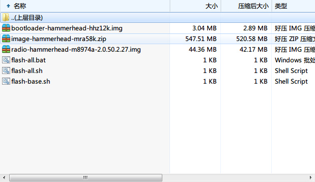
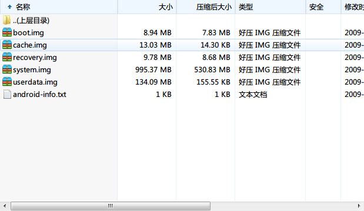
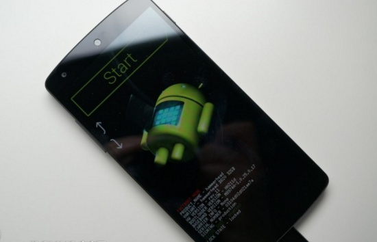
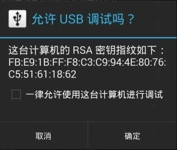
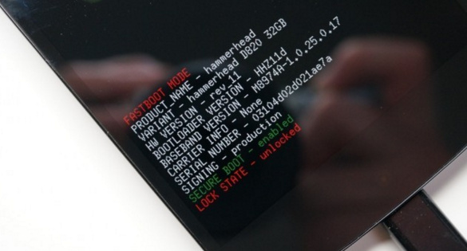

Google Nexus5 android 6.0.1 & root
因为安迪的手机是Nexus 5，所以也写总结，手机用了有3年了，写一些平时需要用的东西供大家参考。
系统下载
谷歌官方镜像下载 ：https://developers.google.com/android/nexus/images#volantislrx21l"hammerhead" for Nexus 5 (GSM/LTE)
| Version | Download | MD5 Checksum | SHA-1 Checksum |
| 4.4 (KRT16M) | Link | 36aa82ab2d7d05ee144d18546565cd5f | bd9c39ded5dc0ac80c4e96d24db060a660266033 |
| 4.4.2 (KOT49H) | Link | fa3bdfbef24c25b48d4969e0925bc600 | 02006b9917ae3f470d29644023b7c843ec96aa03 |
| 4.4.3 (KTU84M) | Link | 34a201b32259aadcc8c4879e45c1575c | 53ff95bf3912814b745e65cab6bc111bde987537 |
| 4.4.4 (KTU84P) | Link | d450411b40a6e60884c8e419bd50db2b | 35ea0277bd6a8fc928b47256bfa97b2eed60746b |
| 5.0 (LRX21O) | Link | 761667f1ddaf4e38d4792136df4ab927 | 01315e08c7f282452b5eba0606dd5a2d5274edde |
| 5.0.1 (LRX22C) | Link | f769bb85b7a82c1b4f7cc88f0d42129d | 0f9eda1b8c801bec45f762c96121e7ae905976c0 |
| 5.1.0 (LMY47D) | Link | 021fa0ed4946e0c7e70e39da301e5a34 | 6c1ad81eb8b90b329da5ed534af6ef18dea9921c |
| 5.1.0 (LMY47I) | Link | d78c50bc06fe37a19536cbca0a17394a | df127988e25758e683d53df9767cc799ee113935 |
| 5.1.1 (LMY48B) | Link | 2002e1b813921b1dfc67aca09c30a171 | 596bb9c125525ce5baf4762a1cac6f5880c50cbc |
| 5.1.1 (LMY48I) | Link | c513af4e908a74545ad5a19cfd54d6f3 | a38c34411f2be783d7fe6dd3b873853db06e776a |
| 5.1.1 (LMY48M) | Link | 8eb950a77a3769070600c93b9572e5c0 | bf3c82fde083b864e11034a59db4d53a605186f1 |
| 6.0.0 (MRA58K) | Link | 159361223f975326fc261bb48def426b | 52364034a9e22d7622c397abe59495fcbdc9c79c |
| 6.0.0 (MRA58N) | Link | 2580949f086418add154059f2833d3b9 | aeca4139183cbdb077c4c4225711e863cbdbe513 |
| 6.0.1 (MMB29K) | Link | 7acd7b5fea099006eb60ef8dbda2a917 | 1943f0f587f19fc35eab03202316d434ac45dbf8 |
刷机教程
1.adb和fastboot驱动百度网盘：http://pan.baidu.com/s/1i422M2p
将里面名称中含有adb和fastboot.exe都复制到 c:/windows/system32下
然后再将名称中含有adb的所有文件复制到 c:/windows/system
2.解压系统镜像包

再解压 image 包（最大的那个包）

将所有的文件解压到 d:\n5
开始菜单→运行→cmd
3.将您的nexus 5调整到bootloader模式，具体的办法是先关机，然后再开机，同时按住电源和音量上和音量下键。

fastboot flash bootloader bootloader-hammerhead-hhz12h.img fastboot flash radio radio-hammerhead-m8974a-2.0.50.2.26.img fastboot reboot-bootloader fastboot flash recovery recovery.img fastboot flash boot boot.img fastboot flash system system.img
fastboot flash bootloader “已最新包解压的bootloader包名为准”
fastboot flash radio “已最新包解压的radio包名为准”
如果您想清除数据的话，就再刷入
fastboot flash cache cache.img fastboot flash userdata userdata.img然后大功告成！
解锁教程
这里再重申一下关于手机解锁的说明： 好处：如果你的手机解锁了，可以刷第三方的recovery的，可以刷论坛上提供的各种rom刷机包，刷自己喜欢的刷机包。另外也只有先解锁才能Root。 坏处：如果你的手机解锁了，要是有问题，是不可以保修的，如果要保修的话，自己还得刷回官方的版本，然后恢复到锁定状态。1.adb和fastboot驱动
百度网盘：http://pan.baidu.com/s/1i422M2p
将里面名称中含有adb和fastboot.exe都复制到 c:/windows/system32下
然后再将名称中含有adb的所有文件复制到 c:/windows/system
2.进入设置->关于手机->版本号，点击5或6次'版本号'就能启动“开发者选项”
3.进入开发者选项，勾选USB调试的复选框，确定选择“一律允许此计算机进行调试”

4.连接你的手机到电脑。
5.一旦你已经给你的电脑调试访问,这是时间的命令。输入一个命令提示符(开始菜单→运行→cmd)
adb reboot bootloader

6.等待bootloader界面在屏幕上出现。fastboot oem unlock
7.一个unlock bootloader的选择确认页面会出现。用音量来选择到“YES,”，用电源键来确定。

8.这时你手机上的所有数据都将被抹去,LOCK STATE将变成unlocked。不应该超过一两分钟。

9.好了就此你的bootloader（引导装载程序）现在已经解锁,你应该看到屏幕上显示“START“用电源键选择并让手机重启。
在重新启动后,你的手机将完成出厂设置.
Root教程
5.0ROOT步骤： 1.将您的nexus 5调整到bootloader模式，具体的办法是先关机，然后在关机的状态下，同时按住电源和音量上和音量下键。 2.通过USB将nexus 5和电脑相连接。 3.从http://autoroot.chainfire.eu下载nexus 5对应的CF-Auto-Root版本
百度网盘：http://pan.baidu.com/s/1qXv2UWO 下载完成后解压该包. 4.运行脚本实现一键root 如果您使用的是windows系统的话 --- 双击运行root-windows.bat - Linux --- chmod +x root-linux.sh --- 运行 root-linux.sh - Mac OS X --- chmod +x root-mac.sh --- 运行 root-mac.sh
5.1 5.1.1 ROOT
先解锁，然后安装第三方recovery twrp，通过其install功能来刷入supersu.zip来实现root！
刷入twrp方法： 参加刷机教程
fastboot flash recovery recovery.img只不过将 recovery.img 名字换成 openrecovery-twrp-2.8.5.2-hammerhead.img
将手机进入fastboot模式，电脑端输入fastboot flash recovery twrp的文件名.img 来实现安装twrp
然后进入recovery模式，利用twrp的install来选择SDcard安装 supersu.zip，然后刷入重启即可安卓5.1.1的root。
百度网盘：http://pan.baidu.com/s/1kUqTztd
6.0ROOT
目前大神Chainfire提供了临时的nexus 5设备安卓6.0的修改版内核，通过刷入对应设备的boot.img后，再刷入twrp等第三方的recovery，通过twrp的install来刷入supersu 2.50 beta版的zip来实现root.
刷入twrp方法： 参加刷机教程
将手机进入bootloader模式，然后电脑端在命令提示符里输入相应的dos命令进入twrp包所在目录，然后输入fastboot flash recovery twrp的文件名.img 来实现安装twrp
刷入了twrp等第三方的recovery：http://teamw.in/project/twrp2/
fastboot flash recovery recovery.imgnexus 5：hammerhead-mra58k-boot.zip
fastboot flash boot boot.imgsupersu 2.50 beta版下载地址：https://download.chainfire.eu/741/SuperSU/BETA-SuperSU-v2.50.zip?retrieve_file=1
然后进入recovery模式，利用twrp的install来选择SDcard安装BETA-SuperSU-v2.50.zip，然后刷入重启即可完成安卓6.0 的root。
百度网盘：http://pan.baidu.com/s/1bs7EUy
6.0 & 6.0.1ROOT
supersu 2.52 beta版下载地址：http://forum.xda-developers.com/attachment.php?attachmentid=3571657&d=1449763480
百度网盘：http://pan.baidu.com/s/1dEiYhzV
然后进入recovery模式，利用twrp的install来选择SDcard安装BETA-SuperSU-v2.52.zip，然后刷入重启即可安卓6.0 & 6.0.1的root。
参见：http://www.inexus.co/